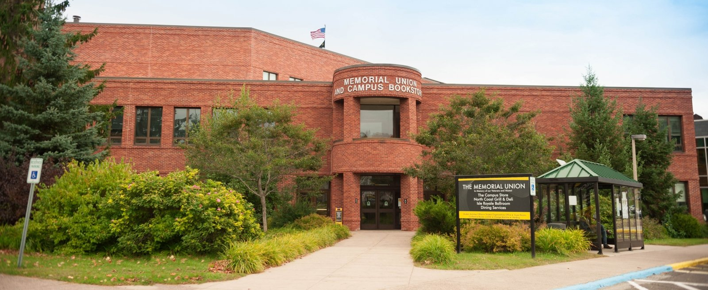

Challenges and Opportunities of Research Data Management in Construction Engineering
May 07–08, 2026 | Michigan Technological University, Houghton, MI
About the Workshop
This NSF-supported workshop (Award No. 2541825) aims to identify challenges and opportunities in Research Data Management (RDM)
within the construction research community. This interdisciplinary two-day event will bring together leading scholars,
NSF program directors, and industry professionals to foster collaboration between construction and open science communities
to promote FAIR data practices and advance NSF’s Public Access Initiative.
Discussion Themes:
The workshop will explore topics such as FAIR data principles, metadata standards, data sharing ethics,
collaboration infrastructures, education and training needs, and integration of open science into construction workflows.
Important Dates
Speaker Program Finalized
February 23, 2026
Registration Deadline
March 30, 2026
Conference Dates
May 07–08, 2026
Registration
Registration will open in early 2026. Participants will be able to register online through this website.
Workshop Program
Tentative Agenda – Day 1
Monday, May 07, 2026
Time
Activity
Notes
07:30 – 08:30
Breakfast and Registration
08:30 – 08:35
Opening Remarks
08:35 – 09:05
Keynote Speech 1: Potentially delivered by NSF director
09:05 – 09:40
Keynote Speech 2: Potentially delivered by construction scholar
09:40 – 10:10
Keynote Speech 3: Potentially delivered by RDM and open-science scholar
10:10 – 10:40
Break and Coffee Session
10:40 – 12:00
Case Study of RDM in Construction (Delivered by PIs)
12:00 – 13:00
Lunch Break
13:00 – 13:30
Lightning Talks on Research Theme 1
13:30 – 14:00
Research Theme 1 Open Discussions – Top 3-5 findings and recommendations
14:00 – 14:30
Lightning Talks on Research Theme 2
14:30 – 15:00
Research Theme 2 Open Discussions – Top 3-5 findings and recommendations
Keynote Speech 4: Potentially delivered by librarian / academic publisher
09:05 – 09:40
Keynote Speech 5: Potentially delivered by journal editor
09:40 – 10:10
Keynote Speech 6: Potentially delivered by cyber-infrastructure scholar
10:10 – 10:40
Break and Coffee Session
10:40 – 12:00
Guided Activities – Topics TBD
12:00 – 13:00
Lunch Break
13:00 – 13:30
Lightning Talks on Research Theme 3
13:30 – 14:00
Research Theme 3 Open Discussions – Top 3-5 findings and recommendations
14:00 – 14:30
Lightning Talks on Research Theme 4
14:30 – 15:00
Research Theme 4 Open Discussions – Top 3-5 findings and recommendations
15:00 – 15:15
Wrap-up
Venue
The 2026 NSF/CI PAOS Workshop will be hosted at the
Memorial Union Building (MUB) at
Michigan Technological University, Houghton, MI.
The MUB is centrally located on campus and offers modern meeting facilities, dining services,
and scenic views of the Keweenaw Peninsula.

Workshop Spaces
MUB Ballroom – Main session hall accommodating up to 100 guests.
Alumni Lounge – Secondary meeting and breakout space serving 50 guests.
Campus Map
Explore the Michigan Tech campus and Memorial Union Building location using the link below: